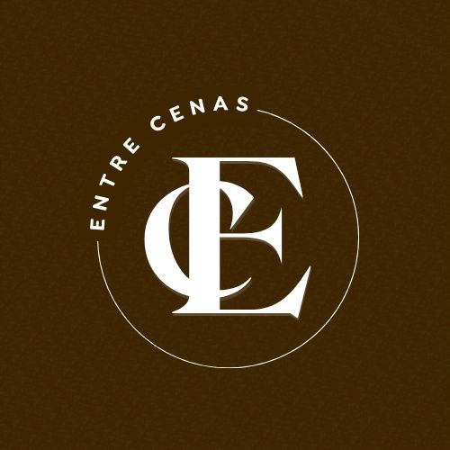

Cada cena é pensada para transmitir emoção, impacto e profissionalismo.
Sou Murilo Santana, videomaker e storymaker apaixonado por transformar momentos comuns em imagens que comunicam, emocionam e permanecem. Meu olhar é guiado pelos detalhes, aqueles que muitas vezes passam despercebidos, mas que contam a verdadeira história por trás de cada momento. No Entre Cenas, transformamos momentos reais em histórias que falam por si. Somos especialistas em registrar experiências com sensibilidade, estética e autenticidade, desde pequenos detalhes até grandes emoções. Aqui, cada projeto é único, pensado para traduzir a essência de quem vive o momento e de quem conta a história. Do planejamento à entrega final, nosso propósito é criar vídeos e conteúdos que emocionam, conectam e permanecem. Seja para eventos, marcas ou produções autorais, nosso compromisso é com a qualidade, a criatividade e a verdade por trás de cada cena. Entre, sinta e viva cada detalhe. Bem-vindo ao Entre Cenas. 🤎
Registramos cada momento do seu grande dia.
Ensaio romântico e personalizado.
Fotos criativas e profissionais.
Cobertura completa de festas.
Fotos e vídeos que eternizam a alegria.
Registramos esse momento único.
Produção profissional para empresas.
Pós-produção criativa.
O gimbal é um estabilizador que garante imagens suaves e profissionais, mesmo em movimentos mais rápidos. Ele permite capturar cenas com fluidez e elegância, deixando o vídeo mais cinematográfico..
A cage é uma estrutura que envolve o celular e permite acoplar acessórios como microfones e luzes. Ela oferece mais firmeza, segurança e controle durante a gravação, além de ampliar as possibilidades de criação.
O microfone capta o áudio com clareza e nitidez, garantindo que cada palavra, ambiente ou emoção seja registrado com alta qualidade. Ele é essencial para entregar um som limpo e profissional.
Trabalhamos de forma mobile, usando o celular como ferramenta principal de captura. Com a tecnologia atual, os smartphones oferecem uma qualidade impressionante de vídeo e uma versatilidade que permite agilidade, praticidade e resultados surpreendentes sem perder a estética profissional.
Por trás de cada cena pronta existe um universo de criação, dedicação e sensibilidade. Este vídeo de bastidores revela um pouco do meu processo: o cuidado com a luz, a busca pelo melhor ângulo, a conexão com as pessoas e a atenção a cada detalhe que transforma um simples registro em uma história verdadeira. Aqui é onde a magia acontece.
No início, converso com você para entender sua necessidade, o tipo de evento, o objetivo do vídeo e tudo que deseja transmitir. Essa etapa é essencial para criar uma conexão verdadeira e construir algo que faça sentido para você.
Cada cliente tem uma identidade única. Por isso, busco compreender seu gosto, referências e expectativas. Essa leitura permite que o resultado final tenha a sua essência — seja algo mais emocional, moderno, dinâmico ou elegante.
Com as informações principais definidas, preparo o roteiro visual do que será captado, organizo os melhores ângulos, luzes, momentos e o estilo de narrativa que será usado. Tudo é pensado para deixar o resultado impecável e coerente com o que você imaginou.
Durante o evento, acompanho tudo com um olhar atento e técnico, registrando a essência de cada situação. Meu objetivo é captar gestos, expressões e detalhes que muitas vezes passam despercebidos, criando imagens verdadeiras e cheias de vida.
Aqui acontece a mágica. Seleciono os melhores takes, faço correções de cor, montagem, ritmo e trilha, construindo um vídeo envolvente e com personalidade. É essa etapa que transforma as imagens brutas em algo único.
A entrega é realizada de acordo com o tipo de projeto, respeitando o tempo necessário para que cada vídeo seja finalizado com o máximo de qualidade. Cada evento pede um cuidado especial — por isso o prazo pode variar conforme a complexidade do trabalho.
É com muita alegria que anunciamos a nova integrante da família Entre Cenas: Leticia Pontes, nossa videomaker e storymaker.
Leticia chega para somar talento, sensibilidade e um olhar criativo que transforma momentos simples em histórias cheias de vida. Apaixonada por registrar emoções verdadeiras, ela tem o dom de observar os detalhes que fazem cada cena única, e de contar essas histórias com leveza, estética e autenticidade.
Com sua energia, dedicação e amor pelo que faz, Letícia traz ainda mais qualidade ao nosso trabalho e reforça o nosso compromisso em entregar vídeos que tocam, inspiram e eternizam memórias de forma especial. Seja muito bem-vinda, Letícia. 🤎
Nada é mais gratificante do que ver o brilho nos olhos de quem confia no nosso trabalho. Neste vídeo, você confere o depoimento de uma cliente que viveu a experiência Entre Cenas e se apaixonou pelo resultado. Agradecemos por cada palavra. É por clientes como ela que fazemos o que fazemos. 🎥✨
Entre Cenas, onde cada momento vira história. Posso contar a sua? 🤎